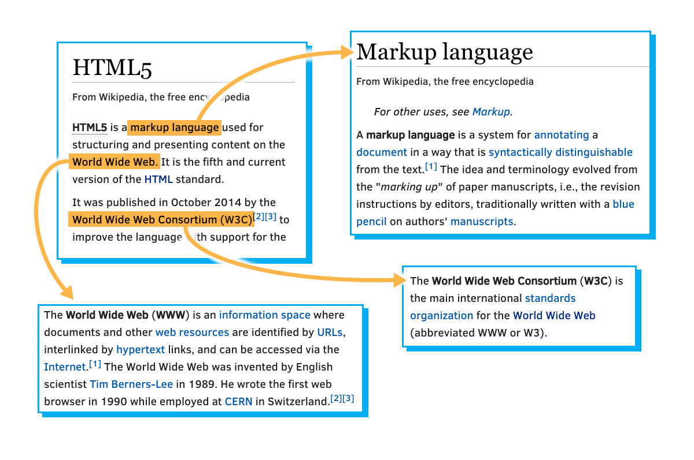
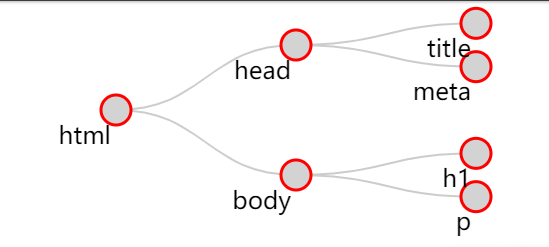

1.1简介-模块1
1.1.2模块1概述
如果您认为Web浏览器只能显示HTML文档，那么您就错了！；）
在幕后，HTML文档几乎总是与其他两种Web标准语言相关联：CSS和JavaScript。在了解JavaScript的精髓之前，我们先介绍一些基础知识并使用许多示例。我们还将首先了解浏览器devtools，并了解JavaScript是如何有用的。
- 首先，让我们简要讨论HTML、CSS和JavaScript的角色，以及它们是如何协同工作的。
- 我们展示了JavaScript可以做什么的示例：从非常小的示例到令人印象深刻的复杂示例的展示。
- 然后，我们来看十几个不同的、非常小的JavaScript典型用法示例。
- 最后，我们将学习如何使用浏览器devtools，这是一套功能强大的内置工具，代表了任何Web开发人员的瑞士军刀。如果没有devtools，您将无法调试代码、查找错误、打印JavaScript程序正在执行的操作的跟踪等。
警告一句：在本课程中，您不会学习JavaScript的全部细节！这是一门入门课程，旨在帮助您理解该语言的基本概念。
1.2.1 HTML用于结构
“Hyper Text(超文本)”部分：链接！
万维网的一个基本要素是“超文本”的概念。超文本是建立在将信息链接在一起的思想之上的，这与使用脚注没什么不同，但更容易、更灵活。其思想是用链接“标记”文档，并定义如何将其分解为不同的部分（章节、段落、表格、图表等）
这就是为什么TimBerners-Lee在1989年开始创建HTML的定义：超文本标记语言，以提供一种简单、统一的方式将超链接合并到文本文档中。
他设想了一种能够促进文档完全互连的技术。他希望作者能够将一个文档中的想法与另一个文档中想法的来源联系起来，或者将一条语句与支持该语句的数据联系起来。传统上，这种事情是通过脚注和参考书目来完成的，这可能会很麻烦。这些信息应该可以很容易地从一个地方转移到另一个地方，以便在阅读一个文档时，可以很容易地访问与之相关的所有内容（链接）。蒂姆·伯纳斯·李（TimBerners-Lee）设想了一个由相互关联的文档组成的“网络”。
他用网络的隐喻来强调文档之间联系的重要性。这不仅仅是一个长长的细节列表，而是一个向各个方向延伸的信息海洋。这片信息海洋由一种称为“浏览器”的新工具导航。
“标记”部分：元素、标记和属性！
所以HTML中的“M”代表“标记”，但标记真正的含义是什么？本质上，它意味着用额外的信息对文档进行注释：例如不同的章节和段落在哪里开始和结束，哪个部分是标题，哪些内容应该强调等等。
有很多方法可以标记文档，但HTML借用了一种祖先语言SGML（标准通用标记语言）的技术，该语言使用尖括号（“<”和“>”）将注释与常规文本分开。在HTML中，这些注释称为“标记”。
考虑上图。它包含一个html元素。事实证明，它包含了html文件的全部内容。如果单击“html”红色节点，您会发现它包含两个组件，一个头部和一个身体。单击其中的每一个将显示其各自的内容。这种结构就是我们计算机科学家所说的“树”。任何给定的元素（除了最外层的“html”元素）都完全包含在另一个元素中，称为“父”元素。毫不奇怪，给定元素中包含的元素是其“子”元素。是的，共同父母的孩子通常被称为“兄弟姐妹”。
因此，在上面的示例中，最上面的元素是html元素，它只包含两个元素，head和body。head元素包含title元素，body元素包含h1元素和p元素。在一个更典型的例子中，身体会容纳更多的孩子，但就我们的目的而言，这已经足够了。p表示“段落”（在最后的HTML页面呈现中显示下一个元素之前，介于[p]和[/p]之间的文本将被分隔一些空格），h1表示“标题级别1”，默认情况下将以粗体显示，字符大小比任何其他文本元素都大，等等。
这可能是一幅很好的图片，但我们如何在文本文件中表示这样的结构呢？这就是“标签”的用武之地。
HTML标签
“Tags（标记）”是我们用来组织文本文件（只是一个长字符串）的东西，它表示组成html文档的元素树。标记不是元素本身，而是用来告诉计算机元素开始和结束的文本位。当你“标记”一个文档时，你通常不希望那些不是文本真正组成部分的额外注释呈现给读者。
HTML借用了另一种语言SGML的技术，为计算机提供了一种简单的方法来确定哪些部分是“标记”，哪些部分是内容。通过使用“[和“]”作为括号，HTML可以指示标记的开始和结束，即“[”的存在告诉浏览器“下一位是标记，请注意”。
无论该标记（或“打开标记”）做什么，它都应用于标记后面的内容。除非您希望它成为文档的整个其余部分，否则您需要指示何时停止使用该标记并执行其他操作，以便再次使用“[”和“]”。由于元素通常嵌套在其他元素中，因此浏览器需要能够区分当前标记的结尾和新标记（表示嵌套元素）的开头。这是通过在“[”后面添加“/”来完成的，表示这是一个“结束标记”。要表示段落的开头和结尾（由单个字母“p”表示），您将以以下内容结尾：
[p]这是我的第一个段落！[/p]
浏览器会看到字母“[p]”，并决定“新段落开始了，我最好开始一行，也许会缩进”。然后，当它看到“[/p]”时，它知道它正在处理的段落已经完成了，所以它应该在继续下一个段落之前在那里打断这一行。
例如，“[em]”标记用于需要强调的元素。“[”和“]”表示这是一个标记，中间的“少量文本”告诉我们它是什么类型的标记。要完整描述元素，需要一个打开和关闭标记，标记之间的所有内容都是元素的内容：

大多数标签都有打开和关闭版本，但也有一些奇怪的版本。有关更多信息，我们强烈建议您学习W3Cx HTML5&CSS基础课程，但我们通常将奇怪的标记称为“自动关闭”标记。通常，这些标记表示完全由其属性描述的元素，因此不需要其他内容。如果你看到这样的情况：
[img src="https://goo.gl/pVxY0e" alt="Floating Flower"/]
... 然后您应该知道，open标记末尾的斜杠有点像close标记的简写，因此您不会看到任何其他表示该元素现在已完成的指示。还有一些标记甚至没有在末尾使用“/”，它们根本没有任何close标记。这是因为该标记所需的所有信息都在“属性”中声明。
标签是其中之一，末尾的“/”是可选的，可以完全删除，这仍然是有效的HTML5。
[img src="https://goo.gl/pVxY0e" alt="Floating Flower"]